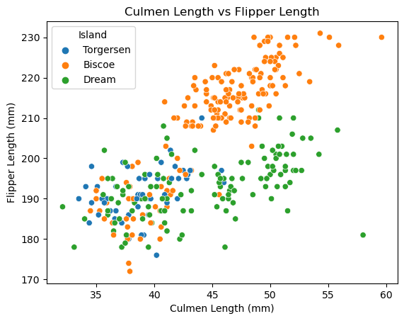
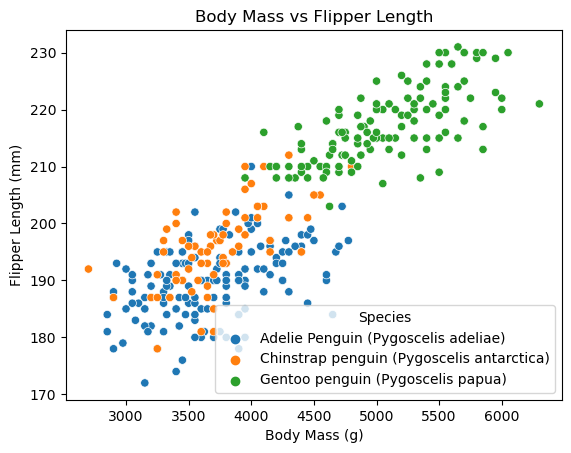

import pandas as pd
import matplotlib.pyplot as plt
import seaborn as sns
url = "https://raw.githubusercontent.com/PhilChodrow/PIC16B/master/datasets/palmer_penguins.csv"
penguins = pd.read_csv(url)Introduction
In this tutorial, we will be learning how to construct interesting data visualizations using the Palmer Penguins data set. The Palmer Penguins data set is a dataset provided by Dr. Kristen Gorman and the Palmer Station, Antarctica Long Term Ecological Research (LTER) Program. This dataset includes features such as size measurements, Nitrogen isotope ratios, and geographical data amongst others that can be explored.
First, let’s download our data using the following code below. We need to import the pandas library using import pandas as pd. We will also import matplotlib and seaborn linraries that will help us with plotting later. Then we will fetch our data using the url link given by url and read in the data with pd.read_csv(url)
Exploration
Now that we’ve downloaded the data and stored it into a dataframe called penguins, let’s see how it looks like. We can do that with the function penguins.head(). penguins is the name of the dataframe and the .head(n) method allows us the preview the first \(n\) rows of the dataframe.
penguins.head(5)| studyName | Sample Number | Species | Region | Island | Stage | Individual ID | Clutch Completion | Date Egg | Culmen Length (mm) | Culmen Depth (mm) | Flipper Length (mm) | Body Mass (g) | Sex | Delta 15 N (o/oo) | Delta 13 C (o/oo) | Comments | |
|---|---|---|---|---|---|---|---|---|---|---|---|---|---|---|---|---|---|
| 0 | PAL0708 | 1 | Adelie Penguin (Pygoscelis adeliae) | Anvers | Torgersen | Adult, 1 Egg Stage | N1A1 | Yes | 11/11/07 | 39.1 | 18.7 | 181.0 | 3750.0 | MALE | NaN | NaN | Not enough blood for isotopes. |
| 1 | PAL0708 | 2 | Adelie Penguin (Pygoscelis adeliae) | Anvers | Torgersen | Adult, 1 Egg Stage | N1A2 | Yes | 11/11/07 | 39.5 | 17.4 | 186.0 | 3800.0 | FEMALE | 8.94956 | -24.69454 | NaN |
| 2 | PAL0708 | 3 | Adelie Penguin (Pygoscelis adeliae) | Anvers | Torgersen | Adult, 1 Egg Stage | N2A1 | Yes | 11/16/07 | 40.3 | 18.0 | 195.0 | 3250.0 | FEMALE | 8.36821 | -25.33302 | NaN |
| 3 | PAL0708 | 4 | Adelie Penguin (Pygoscelis adeliae) | Anvers | Torgersen | Adult, 1 Egg Stage | N2A2 | Yes | 11/16/07 | NaN | NaN | NaN | NaN | NaN | NaN | NaN | Adult not sampled. |
| 4 | PAL0708 | 5 | Adelie Penguin (Pygoscelis adeliae) | Anvers | Torgersen | Adult, 1 Egg Stage | N3A1 | Yes | 11/16/07 | 36.7 | 19.3 | 193.0 | 3450.0 | FEMALE | 8.76651 | -25.32426 | NaN |
We see that there are a lot of columns to look at which can be confusing at times so let’s take a subset of those columns and further examine those. We can look at all the columns with penguins.columns. We see that there are \(17\) columns. Before we can subset it, we’ll copy the original dataframe using penguins.copy() to make a copy of the dataframe and assign it to penguins_copy. Then we can pick the columns we want to subset and store them in a variable called cols. To subset the data we can simply do penguins[cols].
#create a subdf
penguins.columnsIndex(['studyName', 'Sample Number', 'Species', 'Region', 'Island', 'Stage',
'Individual ID', 'Clutch Completion', 'Date Egg', 'Culmen Length (mm)',
'Culmen Depth (mm)', 'Flipper Length (mm)', 'Body Mass (g)', 'Sex',
'Delta 15 N (o/oo)', 'Delta 13 C (o/oo)', 'Comments'],
dtype='object')penguins_copy = penguins.copy()
cols = ['Species', 'Region', 'Island', 'Culmen Length (mm)',
'Culmen Depth (mm)', 'Flipper Length (mm)', 'Body Mass (g)', 'Sex',
'Delta 15 N (o/oo)', 'Delta 13 C (o/oo)']
penguins_subset = penguins_copy[cols]Now that we have subsetted out data, lets take a look at it again with penguins_subset.head()
penguins_subset.head()| Species | Region | Island | Culmen Length (mm) | Culmen Depth (mm) | Flipper Length (mm) | Body Mass (g) | Sex | Delta 15 N (o/oo) | Delta 13 C (o/oo) | |
|---|---|---|---|---|---|---|---|---|---|---|
| 0 | Adelie Penguin (Pygoscelis adeliae) | Anvers | Torgersen | 39.1 | 18.7 | 181.0 | 3750.0 | MALE | NaN | NaN |
| 1 | Adelie Penguin (Pygoscelis adeliae) | Anvers | Torgersen | 39.5 | 17.4 | 186.0 | 3800.0 | FEMALE | 8.94956 | -24.69454 |
| 2 | Adelie Penguin (Pygoscelis adeliae) | Anvers | Torgersen | 40.3 | 18.0 | 195.0 | 3250.0 | FEMALE | 8.36821 | -25.33302 |
| 3 | Adelie Penguin (Pygoscelis adeliae) | Anvers | Torgersen | NaN | NaN | NaN | NaN | NaN | NaN | NaN |
| 4 | Adelie Penguin (Pygoscelis adeliae) | Anvers | Torgersen | 36.7 | 19.3 | 193.0 | 3450.0 | FEMALE | 8.76651 | -25.32426 |
Great! Now that we’ve subsetted our data let’s select 4 quantitaive features to build a correlation matrix. This can be done using penguins_subset[cols].corr since we are subsetting the dataframe penguins_subset.
cols = ['Culmen Length (mm)',
'Culmen Depth (mm)', 'Flipper Length (mm)', 'Body Mass (g)']
penguins_subset[cols].corr()| Culmen Length (mm) | Culmen Depth (mm) | Flipper Length (mm) | Body Mass (g) | |
|---|---|---|---|---|
| Culmen Length (mm) | 1.000000 | -0.235053 | 0.656181 | 0.595110 |
| Culmen Depth (mm) | -0.235053 | 1.000000 | -0.583851 | -0.471916 |
| Flipper Length (mm) | 0.656181 | -0.583851 | 1.000000 | 0.871202 |
| Body Mass (g) | 0.595110 | -0.471916 | 0.871202 | 1.000000 |
The correlation matrix tells us how one variable is related to another. Note that higher absolute values indicate higher correlation. We see that Culmen Length (mm) and Flipper Length (mm) have a correlation of \(0.656181\) which indicates that there is a somewhat strong correlation between these 2 variables. Let’s plot this correlation to see it visually using the sns.scatterplot() function.
Plotting
We can look into the documentation for sns.scatterplot to see what we should input as our parameters.
’seaborn.scatterplot(data=None, *, x=None, y=None, hue=None,…)’
We can fill in these parameters with the ones we want to plot. - data=penguins_subset: this is the dataframe we want to plot from - x = 'Culmen Length (mm)': this is the column we want to plot on our \(x-\)axis - y = 'Flipper Length (mm)': this is the column we want to plot on our \(y-\)axis - hue = 'Island' : this allows use to color the points based on a 3rd variable that is categorical. We choose Island in this case but Sex, Region, etc… also work!
We can also add a title to our plot by doing plt.title("INSERT TITLE"). We will go with “Culmen Length vs Flipper Length”
sns.scatterplot(data = penguins_subset, x='Culmen Length (mm)', y = 'Flipper Length (mm)', hue = 'Island')
plt.title("Culmen Length vs Flipper Length")Text(0.5, 1.0, 'Culmen Length vs Flipper Length')
Congrats! You have created your first plot. We can indeed see that there is a decently strong positive correlation between culmen length and flipper length. Let’s do another just for fun using Body Mass (g) and Flipper Length (mm) and using Species for hue. Like for the previous one, we’ll add a title as well.
sns.scatterplot(data = penguins_copy, x='Body Mass (g)', y = 'Flipper Length (mm)', hue = 'Species')
plt.title("Body Mass vs Flipper Length")Text(0.5, 1.0, 'Body Mass vs Flipper Length')